Next: 2-DOF Controller Design using Up: Two Degrees of Freedom Previous: Two Degrees of Freedom
A feedback control strategy is shown in figure 6.1. The reference 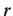 and the output  are continuously compared
to generate error , which is fed to the controller 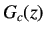, to take appropriate control action. is the controller
output that is fed to the plant. Unlike feed forward controllers, exact knowledge of the plant
are continuously compared
to generate error , which is fed to the controller 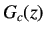, to take appropriate control action. is the controller
output that is fed to the plant. Unlike feed forward controllers, exact knowledge of the plant  and the disturbance
is not necessary in this case. Feedback controllers are further classified as One Degree of Freedom (1-DOF) controllers
and Two Degrees of Freedom (2-DOF) controllers. Degree of freedom refers to the number of parameters that are free to vary
in a system. A higher degree of freedom controller makes the plant less susceptible to disturbances.
and the disturbance
is not necessary in this case. Feedback controllers are further classified as One Degree of Freedom (1-DOF) controllers
and Two Degrees of Freedom (2-DOF) controllers. Degree of freedom refers to the number of parameters that are free to vary
in a system. A higher degree of freedom controller makes the plant less susceptible to disturbances.
The expression for output,  of the system shown in figure 6.1 is given by
of the system shown in figure 6.1 is given by
| 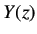 | 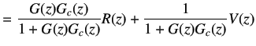 | (6.1) |
| 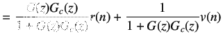 | (6.2) | |
|
Let,
| ||
| 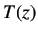 | 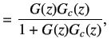 | (6.3) |
| 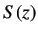 | 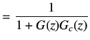 | (6.4) |
|
Therefore,
| ||
| 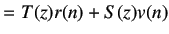 | (6.5) | |
A Two Degrees of Freedom controller is as shown in figure 6.2. Here,  and 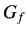 together
constitute the controller.
and 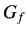 together
constitute the controller.  is in the feedback path and is used to eliminate the effect of disturbances,
whereas is in the feed forward path and is used to help the output track the reference input.
is in the feedback path and is used to eliminate the effect of disturbances,
whereas is in the feed forward path and is used to help the output track the reference input.
The expression for control effort in figure 6.2 is given by
| 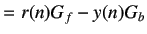 | (6.6) | |
|
Let
| ||
| 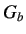 | 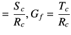 | (6.7) |
|
where
| ||
| 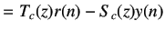 | (6.8) | |
|
Consider a plant whose model is given by
| ||
| 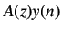 | 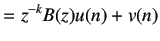 | (6.9) |
|
Substituting equation 6.8 in equation 6.9, we get
| ||
| 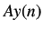 | 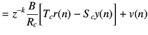 | (6.10) |
|
Solving for
| ||
| 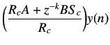 | 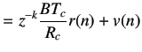 | (6.11) |
|
This can also be written as
| ||
| 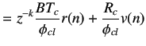 | (6.12) | |
|
where
| ||
| 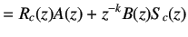 | (6.13) | |
We want the following conditions to be satisfied while designing a controller.